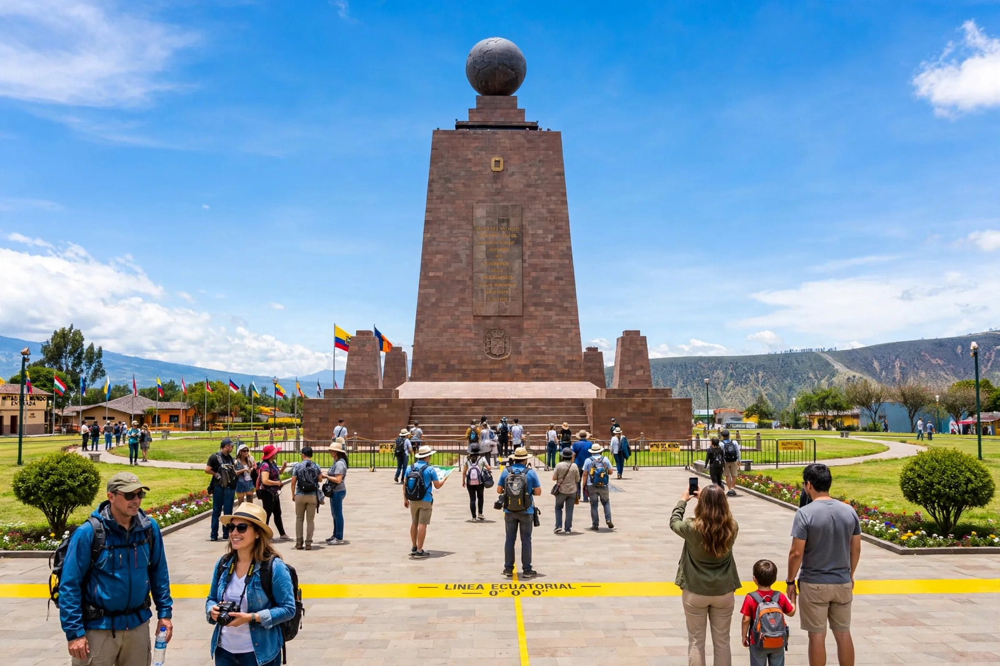
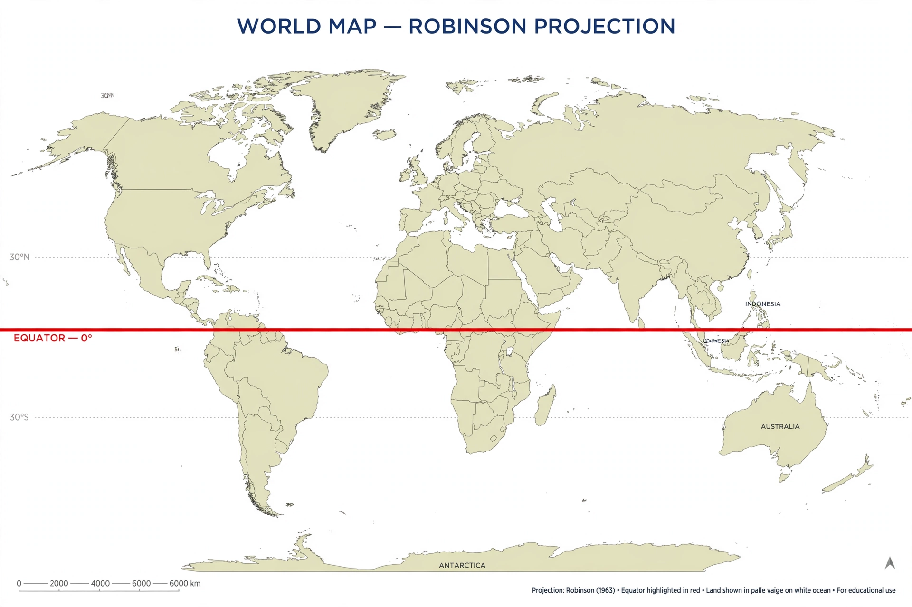

Wikipedia — the free encyclopedia

| Type | Line of latitude |
| Latitude | 0° |
| Length | About 40,075 km |
| Divides | Northern and Southern Hemispheres |

The equator is the line of latitude that circles the Earth midway between the poles, at 0° latitude. It divides the planet into the Northern and Southern Hemispheres and is about 40,075 kilometres long. Because the Earth's axis is tilted relative to its orbit, the equator is also the reference from which latitude — and the Sun's seasonal movement between the tropics — is measured.
Points on the equator experience the fastest rotational speed on Earth's surface, roughly 1,670 km/h, and nearly equal day and night throughout the year.
The equatorial belt is generally hot and wet, influenced by the Intertropical Convergence Zone where the trade winds meet, bringing heavy rain and rainforests such as the Amazon and Congo basins — though highlands on the equator, as in Ecuador and Kenya, are much cooler. The equator crosses land or waters of 13 countries, including Ecuador (named for it), Colombia, Brazil, Gabon, the Republic of the Congo, Uganda, Kenya, Somalia and Indonesia.